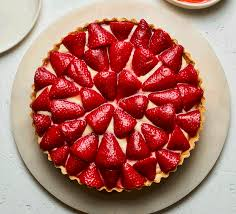

Recetas fáciles y deliciosas para todos los gustos
Receta del Día: Tarta de Fresa

Esta deliciosa tarta de fresa es perfecta para cualquier ocasión. Con una base crujiente, una capa suave de crema pastelera y fresas frescas, ¡será el centro de atención en tu mesa!
Ingredientes:
1 base de tarta (puede ser comprada o hecha en casa)
500g de fresas frescas
250ml de nata para montar
200g de azúcar
1 cucharadita de esencia de vainilla
Instrucciones:
Precalienta el horno a 180°C.
Coloca la base de la tarta en un molde y hornea durante 10 minutos.
Mientras se hornea, monta la nata con el azúcar y la esencia de vainilla.
Cuando la base esté lista, deja enfriar y cubre con la nata montada.
Decora con las fresas cortadas por encima.
Refrigera durante al menos 2 horas antes de servir.
¡Listo! Ahora tienes una deliciosa tarta de fresa para disfrutar en cualquier momento.